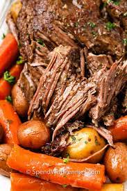

Pot Roast Recipe

Description
Pot roast is a timeless, rustic dish deeply rooted in the culinary traditions of many cultures. Characterized by its slow-cooked, tender beef, it's a symphony of flavors and textures, born from the gentle melding of meat, root vegetables, and aromatic herbs over several hours. The beef, often a chuck roast, transforms during the slow cooking process, breaking down into a melt-in-your-mouth delicacy. Surrounding it, the potatoes, carrots, and onions absorb the rich juices from the meat, becoming succulent and flavorful. Served with its own gravy, pot roast is the epitome of hearty comfort food, reminiscent of Sunday family dinners, festive gatherings, or cold winter nights. It's a dish that promises warmth, satisfaction, and a delightful journey back to cherished memories.
Ingredients
- 3-4 lbs beef chuck roast
- Salt and freshly ground black pepper
- 3-4 large carrots, cut into 2-inch pieces
- 3-4 potatoes, peeled and cut into chunks
- 1 large onion, sliced or chopped
- 3-4 cloves garlic, minced
- 2-3 cups beef broth or stock
- 2-3 tablespoons vegetable oil or olive oil
- 2 tablespoons all-purpose flour (optional for gravy)
- 1-2 bay leaves and a few sprigs of fresh thyme or rosemary (or 1 teaspoon dried)
Steps
- Season the Meat: Generously season the beef chuck roast on all sides with salt and freshly
ground black pepper.
- Sear the Roast: In a large pot or Dutch oven, heat the oil over medium-high heat. Once hot,
add the roast and sear on all sides until a nice brown crust forms, usually 3-4 minutes per side.
- Remove and Set Aside: Once the roast is browned on all sides, remove it from the pot and
set it aside.
- Sauté Vegetables: In the same pot, add the sliced onion, minced garlic, carrots, and
potatoes. Sauté for about 5-7 minutes, or until the onion becomes translucent.
- Deglaze: If using wine, pour it into the pot and scrape up any browned bits from the bottom
with a wooden spoon. If not using wine, you can use a bit of the beef broth for this step.
- Return the Roast: Place the seared roast back into the pot on top of the vegetables.
- Add Liquids and Herbs: Pour in the beef broth until it covers about half to two-thirds of
the roast. Add the bay leaves and thyme or rosemary.
- Simmer: Bring the broth to a gentle boil, then reduce the heat to low, cover the pot with a
lid, and let it simmer for about 3-4 hours. The roast should become very tender and the vegetables should be
cooked through.
- Make Gravy (Optional): If you want to make gravy, remove the meat and vegetables from the
pot. In a separate bowl, mix the flour with a bit of cold water to create a slurry. Bring the remaining
liquid in the pot to a simmer and slowly whisk in the slurry. Continue to cook and stir until the gravy
thickens to your desired consistency.
- Serve: Return the meat and vegetables to the pot to warm them up in the gravy if you've
made it. Otherwise, slice the roast and serve it with the vegetables, drizzling some of the cooking liquids
on top.